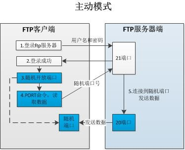
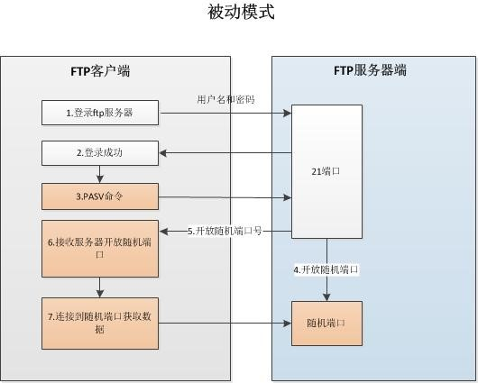

FTP简介
FTP是TCP/IP网络上两台计算机传送文件的协议，FTP是在TCP/IP网络和INTERNET上最早使用的协议之一。尽管World Wide Web(WWW)已经替代了FTP的大多数功能，FTP仍然是通过Internet把文件从客户机复制到服务器上的一种途径。FTP客户机可以给服务器发出命令来下载文件，上传文件，创建或改变服务器上的目录。原来的FTP软件多是命令行操作，有了像CUTEFTP这样的图形界面软件，使用FTP传输变得方便易学。主要使用它进行“上载”。即向服务器传输文件。由于FTP协议的传输速度比较快，我们在制作诸如“软件下载”这类网站时喜欢用FTP来实现，同时我们这种服务面向大众，不需要身份认证，即“匿名FTP服务器”。
FTP使用TCP协议作为底层传说协议，提供了数据传输的可靠性，FTP的标准端口为20，21，20是数据端口，21位指令接口。
FTP主动模式

FTP被动模式

主动模式与被动模式的比较：
主动FTP对FTP服务器的管理和安全很有利，但对客户端的管理不利，因为FTP服务器企图与客户端的高位随机端口建立连接，而这个端口很有可能被客户端的防火墙阻塞掉。被动FTP对FTP客户端的管理有利，但对服务器端的管理不利。因为客户端要与服务器端建立两个连接，其中一个连到一个高位随机端口，而这个端口很有可能被服务器端的防火墙阻塞掉。目前，ftp服务器一般工作在被动模式。
vsftpd服务
常见的FTP服务器程序
vsftpd 是“very secure FTP daemon”的缩写，安全性是它的一个最大的特点。vsftpd 是一个 UNIX 类操作系统上运行的服务器的名字，它可以运行在诸如 Linux、BSD、Solaris、 HP-UNIX等系统上面，是一个完全免费的、开发源代码的ftp服务器软件，支持很多其他的 FTP 服务器所不支持的特征。比如：非常高的安全性需求、带宽限制、良好的可伸缩性、可创建虚拟用户、支持IPv6、速率高等。
使用以下命令安装vsftpd:
1
2
3
4
5
6
7
8
9
10
11
12
13
14
15
16
17
18
19
20
21
22
23
24
25
26
27
28
29
30
| yum install –y vsftpd
# vsftpd的启动与关闭：
service vsftpd start
service vsftpd stop
# vsftpd相关配置文件及目录如下：
# vsftpd主配置文件
/etc/vsftpd/vsftpd.conf
# 黑名单(不允许通过FTP登录)
/etc/vsftpd/ftpusers
# 控制名单（由配置文件控制是白名单还是黑名单）
/etc/vsftpd/user_list
# ftp共享目录
/var/ftp
/var/ftp/xferlog
# 用户控制列表文件
# 黑名单(不允许通过FTP登录)
/etc/vsftpd/ftpusers
# 控制名单（由配置文件控制是白名单还是黑名单）
/etc/vsftpd/user_list
|
vsftpd主配置文件
vsftpd的主配置文件/etc/vsftpd/vsftpd.conf
1
2
3
4
5
6
7
8
9
10
11
12
13
14
15
16
17
18
19
20
21
22
23
24
25
26
27
28
29
30
31
32
33
34
35
36
37
38
39
40
41
42
43
44
45
46
47
48
49
50
51
52
53
54
55
56
57
58
59
60
61
62
63
64
65
66
67
68
69
70
71
72
73
74
75
76
77
78
79
80
81
82
83
84
85
86
87
88
89
90
91
92
93
94
| # 是否允许匿名用户访问，匿名用户访问的时候是被映射为系统的ftp用户，它的家目录为/var/ftp，故我们用匿名访问的时候，访问的是/var/ftp的目录（这个目录的权限请不要随意改动，如果改动可能造成无法访问）。
anonymous_enable=YES
# 是否允许本地用户登录ftp，登录之后是用户的家目录，但uid号小于500的用户都不允许登录
local_enable=YES
# 本地用户是否有上传权限
write_enable=YES
# 本地用户上传的文件的反向掩码。而用户访问ftp对文件的实际权限是：所访问目录和这个文件权限的交集
local_umask=022
# 是否允许匿名用户上传文件
anon_upload_enable=YES
# 匿名用户是否有创建目录的权限
anon_mkdir_write_enable=NO
# 匿名用户是否有删除和重名名文件的权限
anon_other_write_enable=NO
# 匿名用户只能下载全局可读的文件，即文件的属组，属主，其他用户都有读权限
anon_world_readable_only=NO
# 当用户切换目录时，定义的欢迎信息。可以在家目录中定义一个.message的文件
dirmessage_enable=YES
# 是否打开传输日志
xferlog_enable=YES
# 是否启用20号端口进行数据传输，这样会工作在主动模式
connect_from_port_20=YES
# 当用户上传了文件，是否更改该上传的文件属主，并且属主更改为哪个用户
chown_uploads=YES
chown_username=whoever
# 定义传输日志的位置，默认在/var/log/messages中
xferlog_file=/var/log/xferlog
# 定义日志的格式
xferlog_std_format=YES
# 会话的超时时间
idle_session_timeout=600
# 数据连接的超时时间
data_connection_timeout=120
# 指定一个安全用户账号,让FTP服务器用作完全隔离和没有特权的独立用户。一般不启用
nopriv_user=ftpsecure
# 是否允许运行特殊的ftp命令"async ABOR"，一般不启用
async_abor_enable=YES
# 以ascii形式传输，一般不启用
ascii_upload_enable=YES
ascii_download_enable=YES
# 登录ftp的欢迎信息
ftpd_banner=Welcome to blah FTP service.
# 是否要禁止匿名用户使用某些邮件地址,如果是输入禁止的邮件地址的路径和文件名，可防Dos攻击
deny_email_enable=YES
banned_email_file=/etc/vsftpd/banned_emails
# 当这个文件中的用户登录时，把其用户的目录锁定，不能随意切换，对保证系统的安全重要。
chroot_list_enable=YES
chroot_list_file=/etc/vsftpd/chroot_list
# 把所有登录的用户都锁进自己的家目录，不能随意切换
chroot_local_user=YES
# 当用户查看ftp服务器上目录文件时，支持递归显示
ls_recurse_enable=YES
# 以独立守护进程工作
listen=YES
# 是否启用ipv6地址上监听
listen_ipv6=YES
# 定义以pam实现ftp用户认证，根据/etc/pam.d/vsftpd定义进行认证
pam_service_name=vsftpd
# 是否启用用户列表，并且只允许/etc/vsftpd/user_list文件中的用户登录
userlist_enable=YES
# 启用用户列表，禁止此列表/etc/vsftpd/usr_list中定义的用户登录
userlist_deny=YES
# 是否启用tcp_wrapper对vsftpd的控制
tcp_wrappers=YES
|
FTP用户
vsftpd使用用户作为管理单位，想要访问某个ftp共享文件，必须使用特定的用户身份登录，我们可以配置一下几种类型的用户：
- 正常用户（系统用户）
- 匿名用户（anonymous）
- 虚拟用户(ftp-only)
默认情况下，vsftpd在安装的时候会创建一个ftp用户，这个用户就是作为匿名用户使用，ftp用户默认的家目录指向的是/var/ftp。任何没有访问限制的问价都可以通过匿名用户共享。
每一个系统中的用户都可以通过ftp方式访问自己的家目录。
匿名用户共享
vsftpd安装好之后可以直接启动使用，不需要进行任何配置，默认的情况下匿名用户可以登录使用，普通系统中的用户可以通过ftp方式访问自己的家目录。
命令行工具
lftp
我们可以通过lftp命令作为ftp客户端使用，通过以下命令安装lftp
1
2
3
4
5
6
7
8
9
10
11
12
13
14
15
16
17
18
19
20
| yum install –y lftp
# lftp默认使用匿名用户登录：
lftp 192.168.0.133
# 可以指定登录用户：
lftp –u test 192.168.0.133
# FTP基本命令
# 使用get命令可以从ftp服务器上下载文件
lftp 192.168.0.100
cd pu
get demo.tar.gz
# 使用put命令可以将一个文件上传到ftp服务器上：
lftp –u test 192.168.0.133
cd DownLoad
put demo.txt
# 注意：只有登录的用户对某个文件夹具有写的权限，就可以进行上传操作。
|
匿名用户上传
默认情况vsftpd只允许匿名用户访问，但是不允许使用匿名用户上传文件，我们可以通过以下方式配置匿名用户上传：
1
2
3
4
5
6
7
8
9
10
11
12
13
14
15
16
| # 修改vsftpd.conf
# 开启匿名用户（默认）
anonymous_enable=YES
# 打开你匿名用户上传功能
anon_upload_enable=YES
# 打开匿名用户创建文件夹功能
anon_mkdir_write_enable=YES
# 赋予匿名用户上传使用的文件夹以写的权限：
chmod 777 /var/ftp/pub
# 注意：不可以将匿名用户家目录设置为777权限，只能设置子目录，否则vsftpd将禁止访问匿名用户的家目录。
# 拓展：类似DropBox的创建->（权限可以设置为2733）
|